3 herramientas de IA que salvarán tu oposición
¡Hoy es un gran día para ahorrar tiempo y mejorar tus resultados! Tanto si te presentas a las oposiciones como si ya das clase, sabes que el tiempo es limitado y hay que optimizarlo al máximo. En este artículo te enseño 3 herramientas de Inteligencia Artificial que te ayudarán a estudiar y redactar el temario, así como a crear tu programación y unidades didácticas / situaciones de aprendizaje. ¡Empecemos!
En el Top 3: Notion
Notion es un espacio de trabajo con IA que cuenta con multitud de herramientas que van a ayudarte en tu camino a las oposiciones. En un momento te cuento en qué puede ayudarte:
Asistente de estudio: Organiza tu temario de oposiciones
Crea una nueva página desde la barra lateral izquierda, ponle una imagen bonita de cabecera y un título que te motive, algo como…
El temario que me dará la plaza
Debajo, crea una página para cada bloque de contenidos. Por ejemplo, el temario de Informática tiene una parte de arquitectura, otra de bases de datos, otra de redes… Así tendremos cada bloque organizado.
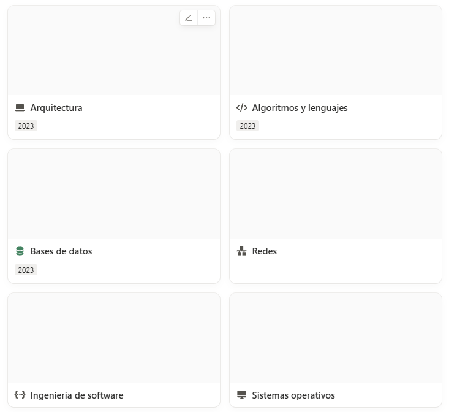
Dentro de cada una de esas páginas, crea una página para cada tema de dicho bloque:
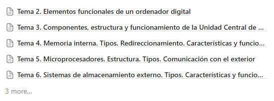
Siguiendo en la página del bloque, debajo de la lista de temas, redacta una introducción común para este bloque; será la introducción de TODOS los temas de este bloque. ¡Sí!, un gran truco para ahorrar tiempo y memoria: crearás una introducción por cada bloque y la reutilizarás en todos los temas de ese bloque.
Aviso: puede ser necesario adaptar un poquito la introducción dependiendo del tema, pero el grueso será el mismo.
Para cada tema, te recomiendo hacer un esquema, índice o mapa mental que te ayude a estructurar el contenido. Recuerda que es importante escribir el índice del tema en las oposiciones. Aquí lo importante es que tú te entiendas y hagas aquello que te ayude a memorizar (o más bien a aprender).
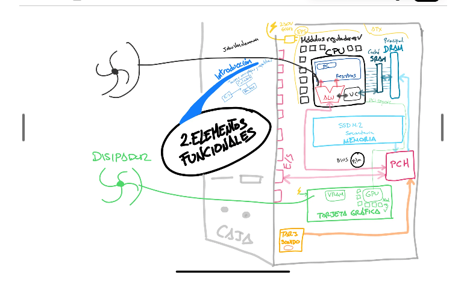
Y debajo, desarrolla el tema combinando títulos de apartado con párrafos de texto, imágenes, vídeos, enlaces… y todo lo que necesites.
Un último apunte importante sobre los temas: es fundamental que tengas ciertas propiedades, para que podamos organizarnos (ahora entenderás por qué). Las propiedades imprescindibles son:
- Estado (status): indica el estado del tema, esto es, pendiente, en progreso o completado.
- Curso/bloque (course): enlaza al bloque al que pertenece, es decir, su página superior.
- Fecha límite (due date): es la fecha en la que deberías tener estudiado el tema.
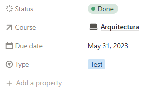
Como ves en la imagen, Notion te permite añadir nuevas propiedades a tu gusto.
Ahora bien, ¿por qué queremos estas propiedades? Porque vamos a organizarnos un tablero de temas pendientes, en progreso y completados, de manera que puedas ver rápidamente cómo vas. Si se acerca la fecha del examen y tienes muchos temas en la columna «pendiente», no es buena señal. Tampoco es bueno tener muchos temas a la vez en la columna «en progreso», porque evitará que te centres adecuadamente en el tema o temas que estás estudiando.
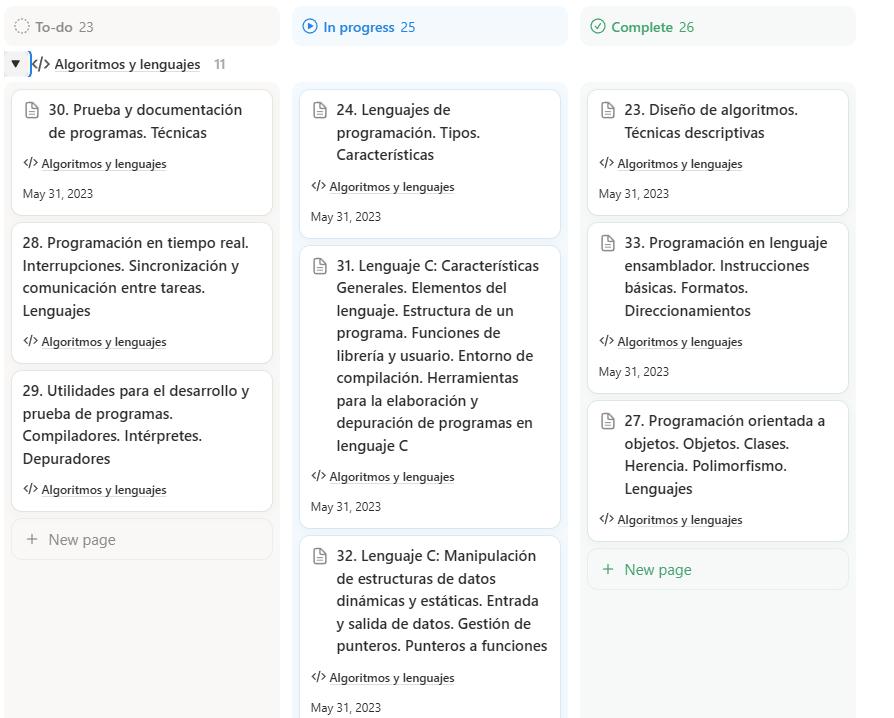
Lo mejor es que este tablero es dinámico y te da varias opciones:
- Puedes iterar una vez mientras redactas el temario, pasando los temas de «pendiente» cuando no los tengas escritos a «en progreso» cuando los estés redactando y «completado» cuando ya los tengas terminados.
- Cuando termines de redactarlos, puedes devolverlos todos a la columna de «pendientes» y moverlos según vas estudiando.
- O puedes hacer las dos cosas a la vez (es la que te recomiendo) y estudiar mientras redactas el tema.
- Además, puedes reconsiderar la columna de algún tema. Imagina que has redactado y estudiado un tema, pero pasa el tiempo y, cuando lo retomas, notas que se te ha olvidado gran parte. ¡No pasa nada! Devuélvelo a la lista de «pendiente» y repásalo.
Y un último consejo: para no crear un tablero que no puedas manejar o te agobie, te recomiendo organizarlo en grupos utilizando desplegables. En cada desplegable, tendrás el tablero de cada uno de los bloques y, al abrirlo, verás los temas que tienes estudiados y los que no. Lo mejor de esto es que te hace la cuenta total de los temas, por lo que ves claramente el número de temas completos, en progreso y pendientes. Te cuento cómo lo hice yo:
- Completos: temas que dominaba perfectamente
- En progreso: temas que podía defender más o menos bien (unos mejor, otros peor)
- Pendientes: temas que no redacté o no estudié
Con esto, puedes calcular la probabilidad que hay de que caiga uno de los temas que has estudiados. Como ves, yo llevaba preparados 51 temas, con lo cual la probabilidad era de 99,23% de que saliera algún tema que dominaba o que podía defender. Además, la probabilidad de que saliera uno que dominaba era de 83,09%. Pero esto ya depende de tu estrategia; puedes jugártela más o menos.
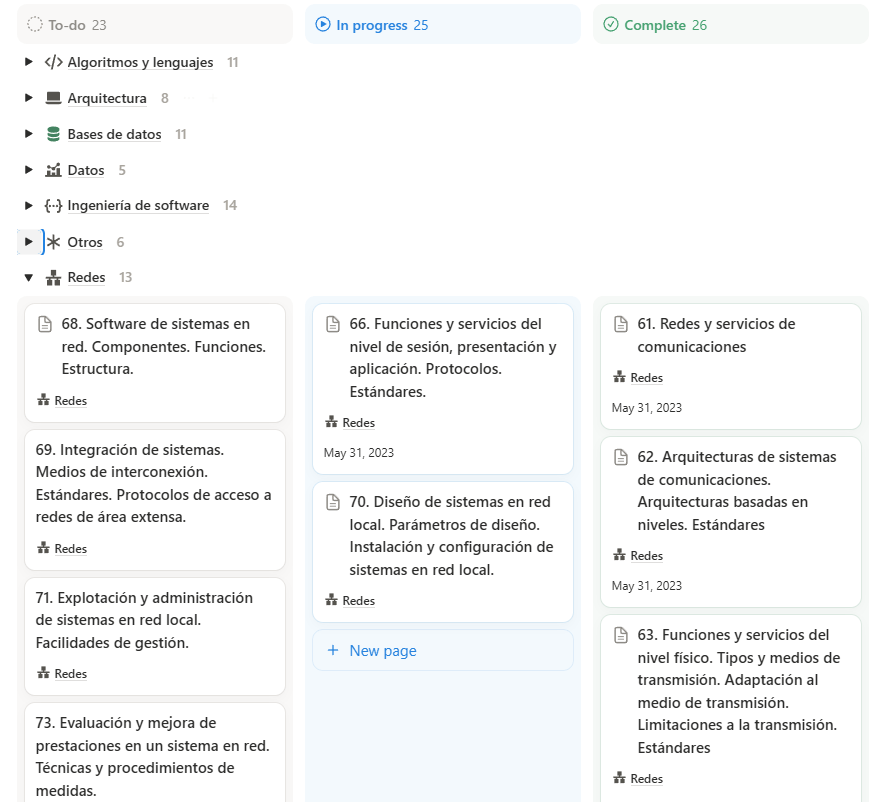
Trucos con IA en Notion
Una vez que tienes la estructura base, puedes optimizar aún más tu estudio ahorrando tiempo con la inteligencia artificial integrada en Notion. Te doy algunas ideas:
1. Reescribe textos: selecciona el texto que quieres mejorar y, en el menú que aparece, haz clic en la opción Improve writing. La IA pensará durante unos segundos y te dará una versión mejorada del texto, que puedes aceptar o descartar. También puedes pedirle a la IA que lo intente de nuevo. Esto es útil si has escrito tu tema rápido a modo borrador y quieres darle un toque más definitivo.
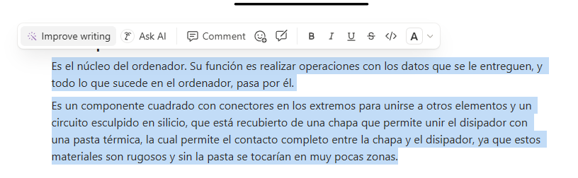
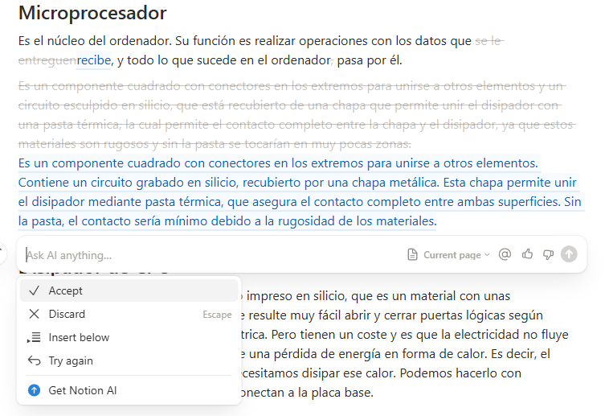
2. Crea resúmenes rápidos: pulsa espacio y se te desplegará el panel de opciones de IA. Ahí verás la opción Add a summary, que te hará un resumen de toda la información de la página. Esto te vendrá muy bien para repasar los temas. Puedes imprimir estos resúmenes a modo de fichas en las que verás el índice del tema y una breve descripción de cada punto.
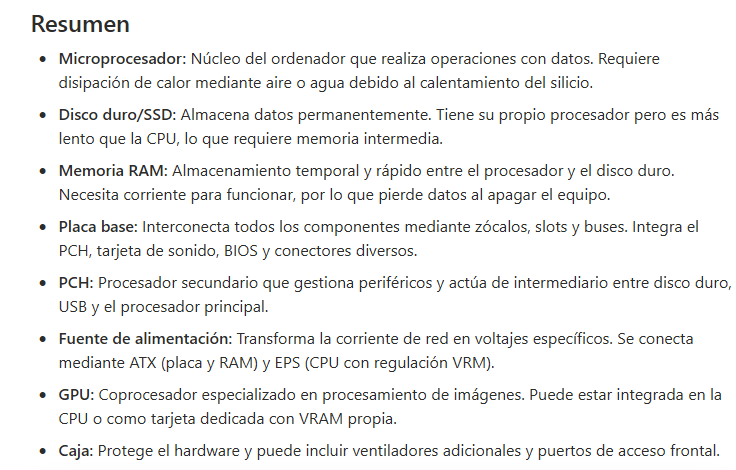
3. Hacer diagramas de flujo sobre un proceso con la información que hay en la página. En el menú desplegable de la IA, elige la opción Make a flowchart. A continuación, dale una orden a la IA o hazle una pregunta y ella te creará el diagrama.
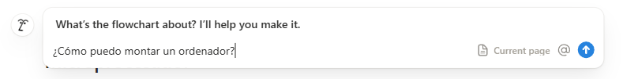
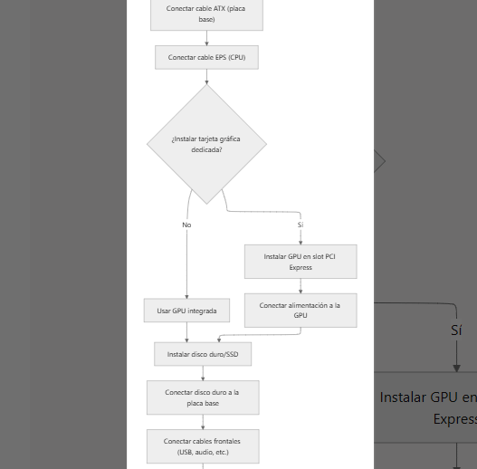
- Utiliza una plantilla para tus temas e incluye una frase motivacional con IA: Crea un bloque con IA en el que le pidas una frase motivacional. Así, cada tema creará automáticamente una frase.
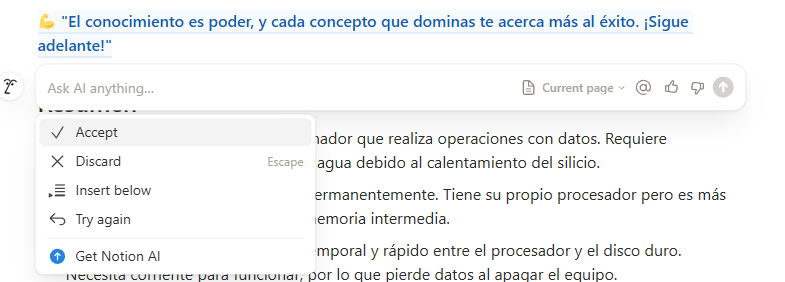
En el Top 2: ChatGPT
ChatGPT es un chat con IA integrada que puede hacer casi de todo por ti, pero ten en cuenta que no está especializado. Por ello, te será útil como punto de partida para iniciarte en ciertos temas, explicarte algo que no entiendas o darte fuentes de información contrastadas y fiables. Te voy a dar un flujo de trabajo que te vendrá de perlas:
1. Adjunta la lista de temas y pídele a ChatGPT que te divida el temario en bloques. Esta es la salida que nos ofrece:
| Bloque | Temas | Resumen |
|---|---|---|
| 1. Representación, hardware y arquitectura básica | 1. Representación y comunicación de la información 2. Elementos funcionales de un ordenador digital 3. Componentes, estructura y funcionamiento de la UCP 4. Memoria interna: tipos, direccionamiento 5. Microprocesadores: estructura, tipos, comunicación exterior 6. Sistemas de almacenamiento externo 7. Periféricos de E/S 8. Hardware comercial: placa base, tarjetas | Todo lo relativo a hardware, memoria, procesadores y cómo se representa la información |
| 2. Lógica digital y organización de datos | 9. Lógica de circuitos: combinacionales y secuenciales 10. Representación interna de datos 11. Organización lógica (estructuras estáticas) 12. Organización lógica (estructuras dinámicas) 13-14. Ficheros: tipos, organizaciones, uso | Diseño digital básico + estructuras de datos y ficheros |
| 3. Sistemas Operativos y administración de sistemas | 15. Sistemas operativos: componentes, estructura, funciones, tipos 16–20. Gestión de procesos, memoria, E/S, archivos y dispositivos 20. Explotación y administración de SO 21. Sistemas informáticos: estructura física y funcional 22. Planificación, explotación, configuración, seguridad | El núcleo del sistema operativo, administración y configuración segura de sistemas |
| 4. Programación y algoritmos | 23. Diseño de algoritmos 24. Lenguajes de programación: tipos y características 25. Programación estructurada 26. Programación modular 27. Programación orientada a objetos 28. Tiempo real: interrupciones, sincronización 29. Utilidades del desarrollo: compiladores, intérpretes, depuradores 30. Pruebas y documentación | Técnicas de programación, paradigmas y soporte de desarrollo |
| 5. Lenguaje C y ensamblador | 31. Lenguaje C: fundamentos, entorno, librerías 32. C: manejo de memoria dinámica, punteros, E/S 33. Programación en ensamblador: instrucciones, formatos, direccionamientos | Programación de bajo nivel y lenguaje C, conceptos fundamentales de estructura de programas |
| 6. Bases de datos y gestión de datos | 34. SGBD: funciones, componentes, arquitecturas 35. Definición de datos, niveles, diccionario 36. Manipulación de datos, optimización 37. Modelos jerárquico y en red 38. Modelo relacional, álgebra relacional 39. Lenguajes definición y manipulación (SQL etc.) 40. Diseño de BD relacionales 41. Herramientas de desarrollo en BD 42. BD distribuidas 43. Administración de SGBD 44. Seguridad de datos 45. Sistemas de información | Diseño, manipulación, administración y seguridad de bases de datos |
| 7. Ingeniería del software y análisis de sistemas | 46. Aplicaciones de gestión empresarial 47. Instalación y explotación de aplicaciones 48. Ingeniería del software: ciclo, metodologías 49–55. Análisis de sistemas, modelización, diseño lógico y físico, interfaz 56. Diseño orientado a objetos 57. Calidad del software 58. Herramientas CASE 59. Gestión y control de proyectos | Desde la planificación y análisis hasta el diseño, calidad y gestión de proyectos |
| 8. Inteligencia, redes y comunicaciones | 60. Sistemas basados en el conocimiento / IA 61. Redes y servicios de comunicaciones 62. Arquitecturas de sistemas de comunicaciones 63. Nivel físico 64. Nivel de enlace 65. Niveles de red y transporte 66. Sesión, presentación y aplicación 67. Redes de área local 68. Software de sistemas en red 69. Integración de sistemas, redes de área extensa 70. Diseño de sistemas en red 71. Explotación y administración de redes 72. Seguridad en sistemas en red 73. Evaluación y mejora de rendimiento 74. Sistemas multimedia | Comunicación, redes, arquitecturas protocolarias, seguridad y mejora de rendimiento en redes |
2. Pídele al chat que te diseñe un plan de estudio de acuerdo al número de temas que quieres estudiar y el tiempo del que dispones. En este tipo de peticiones es interesante que le digas al chat si ha entendido todo y si tiene alguna duda, porque afinará la respuesta al máximo de acuerdo a tus requisitos. Mira qué pasa si le digo «qu»Si necesitas más datos para hacer un buen diseño, dímelo, ¿de acuerdo?»
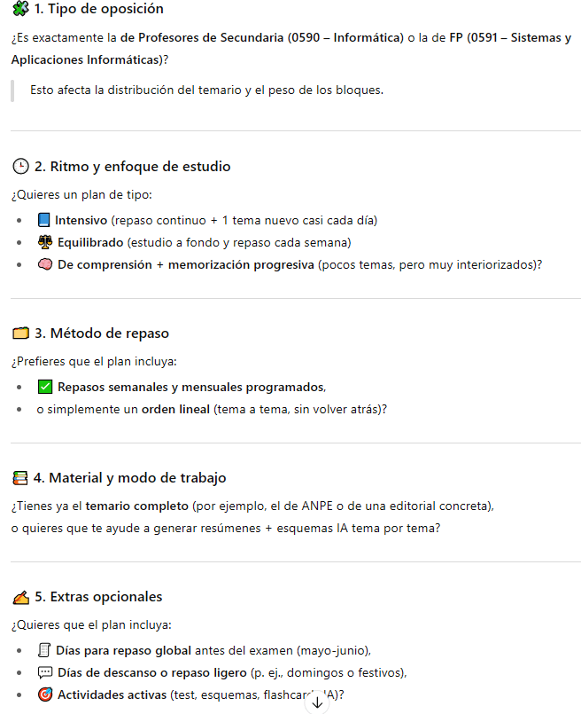
Una vez que le indico las respuestas a estas preguntas, ChatGPT me da un plan que se ajusta perfectamente a mis necesidades. Primero, me hace un análisis de los bloques y el total de temas que estudiaré y luego me da el esquema de temas a estudiar por semanas.
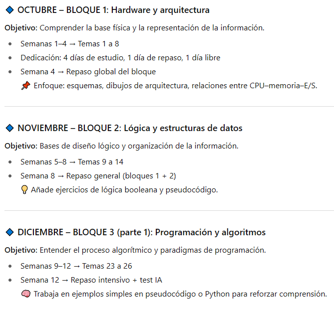
Al final, cierra con el planning semanal:
| Día | Actividad | Tiempo |
|---|---|---|
| Lunes | Tema nuevo (1ª mitad) | 3 h |
| Martes | Tema nuevo (2ª mitad) | 3 h |
| Miércoles | Profundización + esquema + memorización activa | 3 h |
| Jueves | Ejercicios, test o ampliación IA | 3 h |
| Viernes | Repaso semanal (flashcards, autoexamen, resumen) | 3 h |
| Sábado | Tema extra o repaso acumulado | 3 h |
| Domingo | Descanso o repaso ligero opcional | — |
3. Simplifica conceptos complejos para entenderlos mejor. Por ejemplo, en este temario de Informática, hay un tema sobre el lenguaje ensamblador, que es bastante complejo, porque trata un nivel muy bajo del funcionamiento del ordenador y que, a día de hoy no se utiliza. Si le pregunto a ChatGPT «Explícame de manera muy sencilla y para alguien que no tiene ni idea de informática qué es el lenguaje ensamblador», me dará una explicación que pueda entender mejor.
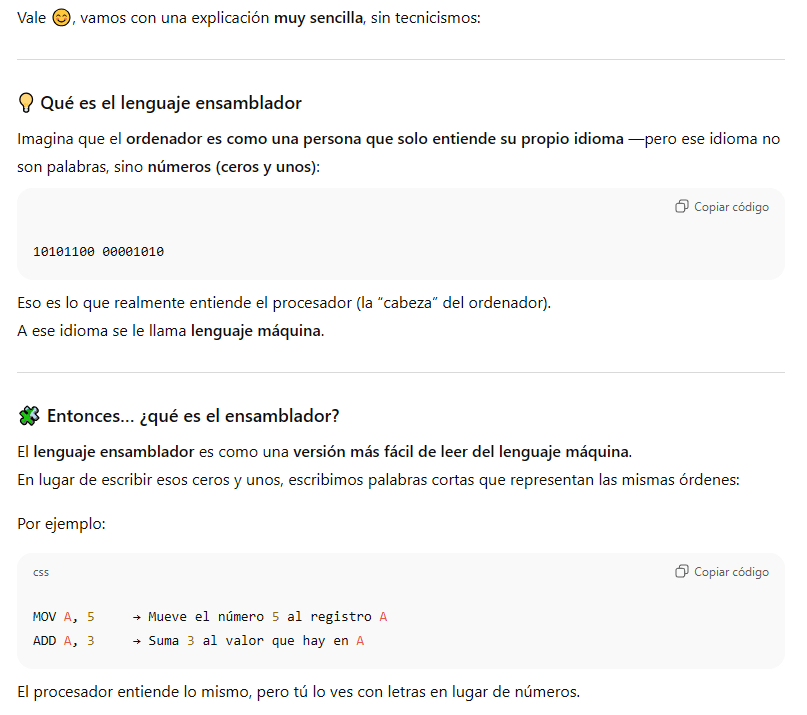
4. Crea mapas mentales a partir de tus temas. Adjunta tu tema en .pdf o .docx, pásale el enlace o pega directamente el texto de tu tema y pídele a la IA que te genere un mapa mental visual. Aquí está el que me ha creado a mí (podrás observar que hay algunos errores tipográficos… Siempre será mejor que crees tus propios esquemas, porque lo memorizarás más fácilmente, pero ChatGPT puede ayudarte a romper el bloqueo de la página en blanco):
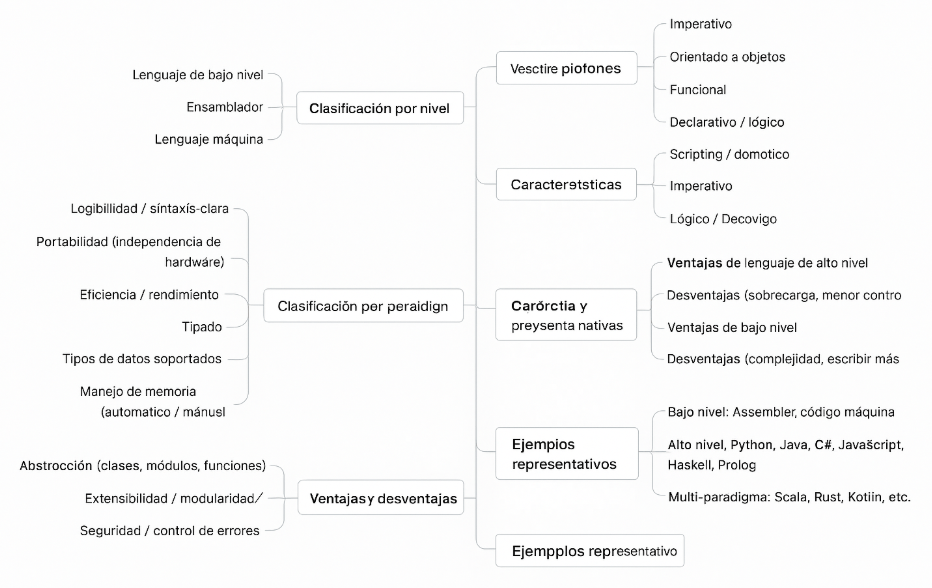
En el Top 1: NotebookLM
NotebookLM es una herramienta de Google que actúa de cuaderno digital con IA integrada y uno de sus mayores potenciales es ayudarte a aprender. Fíjate que te digo «aprender» y no «estudiar» o «memorizar», porque creo que la mejor forma de preparar el temario de las oposiciones es aprenderlo y no memorizarlo. Te digo las ventajas que tiene:
- Aprender es memorizar a largo plazo, así que, en el caso de que tengas que volver a presentarte a las oposiciones en próximos años, ya te sabrás gran parte del temario y solo tendrás que repasar y mejorar.
- Aprender es entender los temas, por lo que las ideas se quedan en tu cabeza y solo tienes que unir unas con otras.
- Eso implica que tu esfuerzo puede focalizarse en explicar mejor el tema, de acuerdo a los criterios que te marque el tribunal.
El punto fuerte de NotebookLM es que procesa la información que tú le das, a diferencia de ChatGPT, que busca información de cualquier parte. Por tanto, tu conversación con esta IA siempre estará acotada y no te dará información errónea ni ampliará innecesariamente tus temas.
Este es el flujo de trabajo que seguiremos:
Flujo de trabajo con NotebookLM
1. Creamos un cuaderno nuevo y le damos un nombre
2. Añadimos las fuentes que alimentarán a nuestro cuaderno:
- Temario oficial: la lista de temas con su correspondiente numeración.
- Criterios del tribunal para la prueba escrita.
- Todos nuestros temas. Te recomiendo unir todos los temas en un mismo PDF, ya que NotebookLM tiene un límite de 50 fuentes en su versión gratuita. Uniendo todo el temario en un solo PDF, te contará como una única fuente.
- Libros de consulta. En mi caso, voy a añadir 6 libros sobre algoritmos, redes y lógica.
- Páginas web de referencia, como por ejemplo de divulgadores especializados, universidades o empresas del sector.
- Vídeos relacionados o canales de YouTube. En este segundo caso, debes añadir la fuente como «Sitio web» y no desde el botón «YouTube».
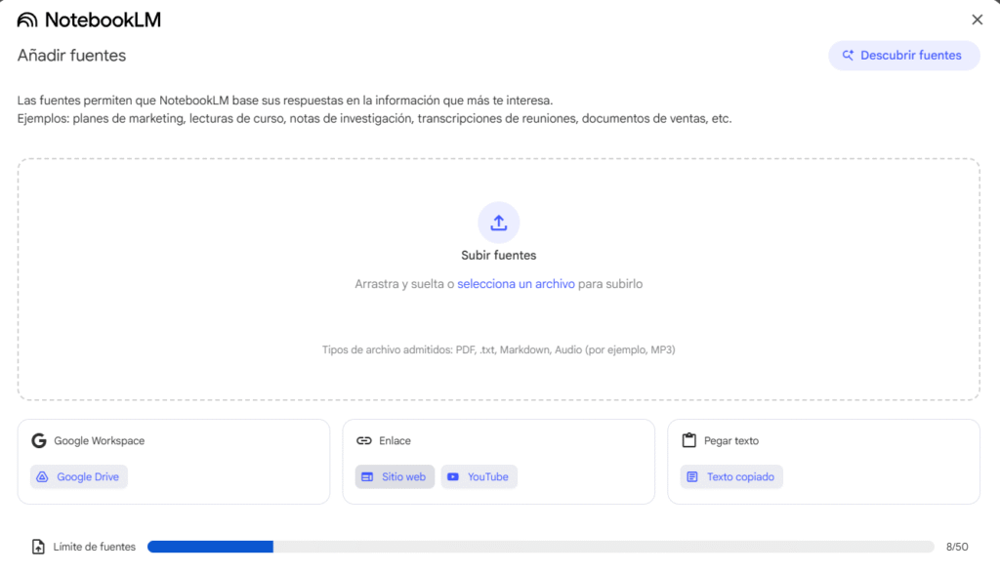
3. Descubre nuevas fuentes: Aquí podrás buscar en la web más fuentes sobre el tema que indiques en el cuadro de texto. Cuanto más concreta sea tu orden, mejores resultados obtendrás. Esto nos dará una lista de posibles fuentes, de las cuales podemos añadir todas, algunas o ninguna, según nos interese. Yo me voy a quedar solo con 2.
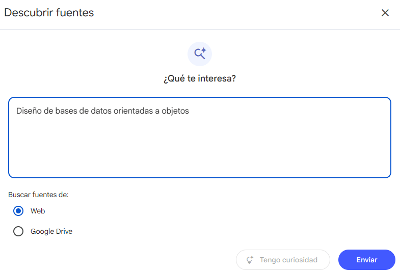
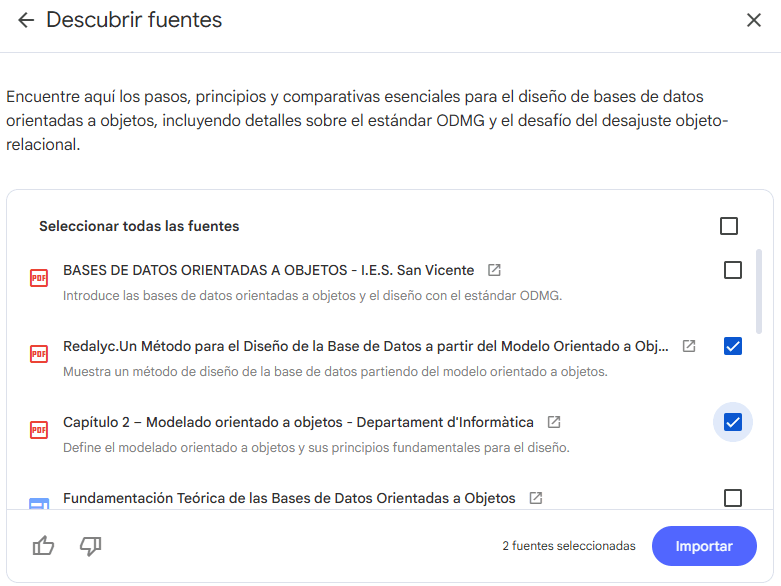
4. Chatea con tu cuaderno personalizado para que te ayude en lo que necesites. Te doy algunas ideas:
- Haz un resumen del tema… [20] de [temario.pdf].
- Explícame… [el Modelo OSI]
- ¿Qué significa… [OSI]?
- ¿Cómo describirías fácilmente para que cualquiera lo entienda qué es… [un algoritmo]?
- ¿Puedes hacer un símil del [modelo OSI] con algo de la vida real fácil de entender?
5. Saca el máximo partido a NotebookLM con la columna de Studio, donde puedes:
- Crear un mapa mental que resuma todas las fuentes que has introducido
- Crear un resumen de audio y uno de vídeo
- Utiliza tarjetas didácticas en las que el cuaderno te pregunta, tú respondes mentalmente y luego le das la vuelta a la tarjeta para ver la respuesta.
- Crea un cuestionario para ir respondiente interactivamente a las preguntas que te lanza NotebookLM
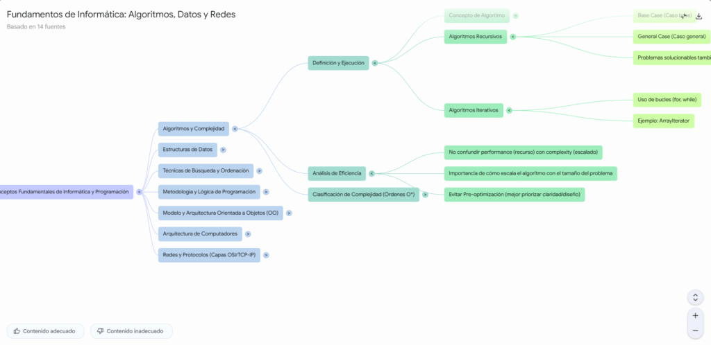
Todo esto te vendrá de perlas para repasar, porque te da una visión general de todo el temario, pero si quieres aprovechar aún más tu cuaderno digital en el día a día, te cuento como hacerlo:
Estudia con estrategia en NotebookLM
Aún más interesante es organizarte estratégicamente con esta herramienta para sacar el máximo provecho. Te cuento mi secreto:
- Crea un cuaderno para cada bloque de temas
- Sube los temas de ese bloque
- Crea un resumen en audio y otro en vídeo
- Crea el mapa mental del bloque
- Navega por el mapa mental y haz clic en alguno de los temas. Esto te abrirá el chat, que te hará un resumen de ese punto. Aprovéchalo para empaparte de ese conocimiento si estás en la fase de estudio o bien para repasar si ya has estudiado ese tema.
- Echa un ojo a las preguntas que te sugiere el chat, porque te servirán para aprender, repasar o ampliar información.
- Hazle tus propias preguntas al chat, ya sea para resolver tus dudas, para aprender algo nuevo, para entender un concepto complejo que se te resiste o para repasar.
- Usa las tarjetas didácticas y los cuestionarios para repasar
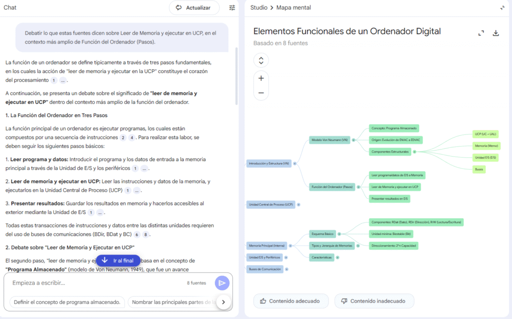
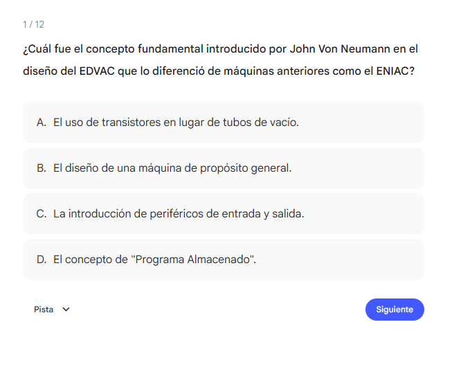
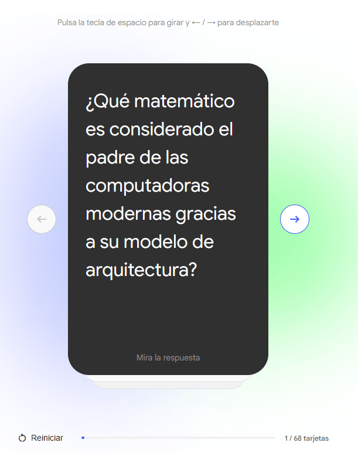
Si trabajar por bloques es demasiado para ti, crea un cuaderno por tema y trabaja igual. No obstante, yo te recomiendo tener un enfoque más global del temario, porque podrás utilizar partes de unos temas en otros, lo cual te ahorra mucho trabajo de redacción y memorización.
Mi método de estudio
Si quieres conocer a fondo mi método de estudio, entra en la formación 10 claves para un tema 10 y te enseño cómo redactar tu propio temario, cómo estudiarlo de manera eficaz y cómo escribirlo en las oposiciones para lograr la máxima nota.
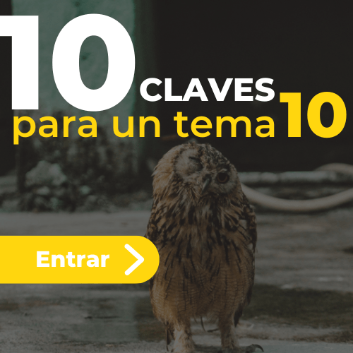